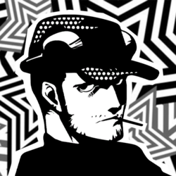

Hanged-Man XII

Munehisa Iwai
Confidant Abilities
| Rank | Ability |
|---|---|
| 1 | Starter Customization: Allows you to customize your gun and install upgrades. |
| 2 | - |
| 3 | Camo Customization: Allows you to customize camouflage on your gun, which can inflict ailments. |
| 4 | - |
| 5 | Discount: Decreases the cost (-50%) of gun customization. |
| 6 | - |
| 7 | Expert Customization: Unlock more parts for customization. |
| 8 | - |
| 9 | - |
| 10 | On The House: Allows you to customize your gun for free. |
Schedule
- Time of DayEvening
Day of Week: Saturday, Sunday, and Holidays
Location: Shibuya Airsoft Shop
Rank Up Progression
| Rank | Requirements / Dialogue Choices | Next Pts |
|---|---|---|
| 1 | Requires Guts Lv 4 (Dauntless). 1. "I want to talk about the bag." (+0) 7. "So what's my first job?" (+10) | 0 |
| 2 | 3. "What should I do now?" / "How's your cold?" (+5) Reward: Proficiency +2♪ | 5 |
| 3 | 2. "I always knew you were a thug." (+10) 3. "We made a deal, didn't we?" (+10) Reward: Proficiency +2♪ | 15 |
| 4 | 4. "Where's my reward?" (+10) (Phone) "I agree." (+5) Reward: Proficiency +2♪ | 25 |
| 5 | 2. "You're pathetic." (+10) 3. "I'll stick around for the guns." (+10) (Phone) "You're right." (+5) Reward: Proficiency +2♪ | 40 |
| 6 | 3. "Girls." / "That's a secret." (+10) 4. "You should buy us something." (+10) (Phone) "He's my age, so it comes easier." / "All I did was listen to him." (+5) | 40 |
| 7 | 1. "Absolutely." (+10) 2. "He's clever." (+10) (Phone) "Bring it on." (+5) | 0 |
| 8 | Requires Guts Lv 5 (Lionhearted) + Completion of Shady Deal in the Shadows request (triggered after Rank 7). Choices: 1. "I did it all for Iwai." (+10) 2. "I will." / "I want to help you." (+5) Actual Dialogue: 1. "I dunno." (+5) 2. "I guess I could consider it." / "If you pay me well." (+10) (Phone) "Understood." (+5) Reward: Proficiency +3♪ | 25 |
| 9 | 1. "Are you sure he's still alive?" (+10) 5. Any (+10) 6. "Kaoru is really strong-willed." (+15) (Phone) "Like father, like son." / "Gecko bonds go beyond blood." (+5) | 40 |
| 10 | Reward: Proficiency +2♪ | N/A |
Gift Guide
| Gift Item | Confidant Points | Purchase Location | Price |
|---|---|---|---|
| Silver Bangle | +50 | Turtle Diamond Jewelry Store, Station Underground Mall, Shibuya | ¥78,000 |
| Snack Pack | +50 | Rocinante, Central Street, Shibuya | ¥5,800 |
| 48-Sided Puzzle | +50 | General Store, Shinjuku | ¥3,200 |
| Robot Vacuum | +50 | Electronics Superstore, Akihabara | ¥44,800 |
Bonus Events
Hangout Inokashira (Requires Hanged-Man Rank 3+)
- "You gonna have a picnic here?" (+15)
- Receive Swan Boat
Hangout Ikebukuro (Requires Hanged-Man Rank 6+)
- "Want me to teach you?" (+15)